| Name |
Image |
Tier |
Pool |
Description |
Flavor |
| Mini-Hakkero |
 |
Starter |
Marisa_color |
Whenever you play a card, gain 1 Charge-up . |
A mini-Eight Trigram Furnace, a gift from Rinosuke when Marisa left her parents. |
| Shroom Bag |
 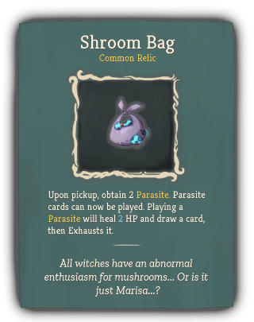 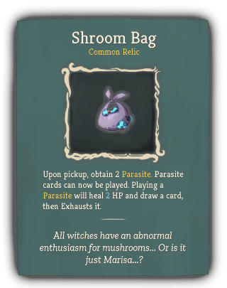 |
Common |
Marisa_color |
Upon pickup, obtain 2 Parasite. Parasite cards can now be played. Playing a Parasite will heal 2 HP and draw a card, then Exhausts it. |
All witches have an abnormal enthusiasm for mushrooms... Or is it just Marisa...? |
| Amplification Wand |
 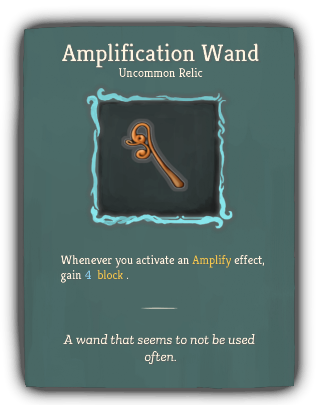 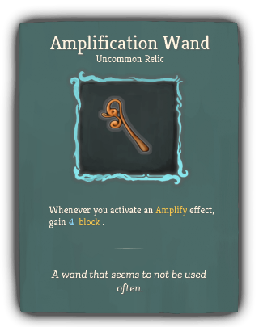 |
Uncommon |
Marisa_color |
Whenever you activate an Amplify effect, gain 4 block . |
A wand that seems to not be used often. |
| Bread Of A Washoku Lover |
 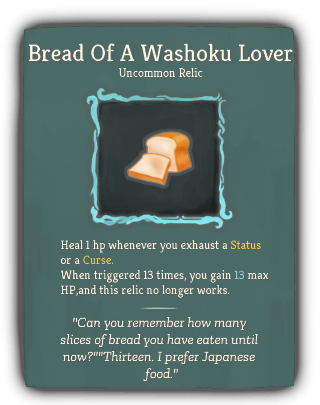 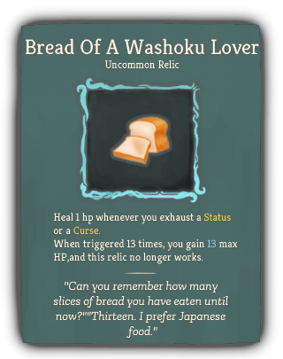 |
Uncommon |
Marisa_color |
Heal 1 hp whenever you exhaust a Status or a Curse.
When triggered 13 times, you gain 13 max HP,and this relic no longer works. |
"Can you remember how many slices of bread you have eaten until now?""Thirteen. I prefer Japanese food." |
| Handmade Grimoire |
 |
Uncommon |
Marisa_color |
At the start of battle, for every 15 cards in your master deck, gain [E] and draw a card. |
A notebook full of experiment records and magic material recipes;just how Marisa develops her Magics. |
| Magic Broom |
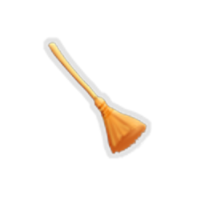 |
Rare |
Marisa_color |
Every time you play 3 cards that cost 0, draw 1 card. |
Marisa always travels on her flying broom. |
| Big Shroom Bag |
 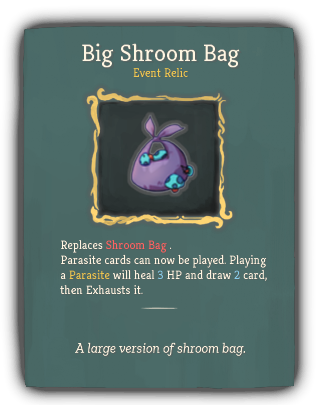 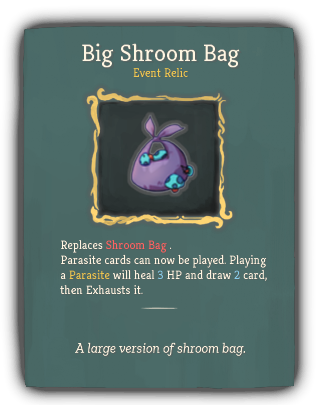 |
Special |
Marisa_color |
Replaces Shroom Bag .
Parasite cards can now be played. Playing a Parasite will heal 3 HP and draw 2 card, then Exhausts it. |
A large version of shroom bag. |
| Cat Cart |
 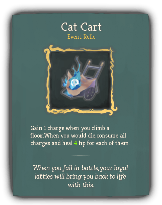 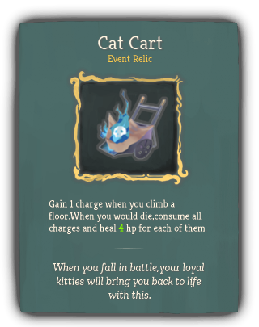 |
Special |
|
Gain 1 charge when you climb a floor.When you would die,consume all charges and heal 4 hp for each of them. |
When you fall in battle,your loyal kitties will bring you back to life with this. |
| Sprouting Branch |
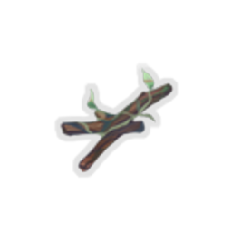 |
Special |
Marisa_color |
At the start of combat, gain 5 Regen . |
The dead branch just come to life in Marisa's hand,how poetic. |
| Bewitched Hakkero |
 |
Boss |
Marisa_color |
Replaces Mini-Hakkero .
Whenever you play a card , gain 1 Charge-up .
gain 1 more if it is a Spark card. |
Its firepower is on a new level, but is it ok to use a bewitched tool? |
| Experimental Familiar |
 |
Boss |
Marisa_color |
At the start of each turn, add 1 Spark to your hand.
At the start of combat, you can choose 1 from 3 random cards. It costs 0 this turn. |
A Familiar looks just like a shiny orb. Not very powerful, but it will surely help you a lot. |
| Rampaging Magic Tool |
|
Boss |
Marisa_color |
Gain [E] at the start of each turn.
Apply a random debuff/buff ( 2 Frail , 2 Weak , 2 Vulnerable , 3 Poison , 8 Charge-up )to you at the start of each combat. |
It's been so long since anyone last used them. Who knows what could happen? |
| Simple Launcher |
 |
Shop |
Marisa_color |
Reduce your Charge-up consumption threshold value from 8 to 6 . |
A flashlight is a flashlight,no matter how it is called... |

{kind=link}
{kind=link}
{kind=link}


{kind=link}
{kind=link}